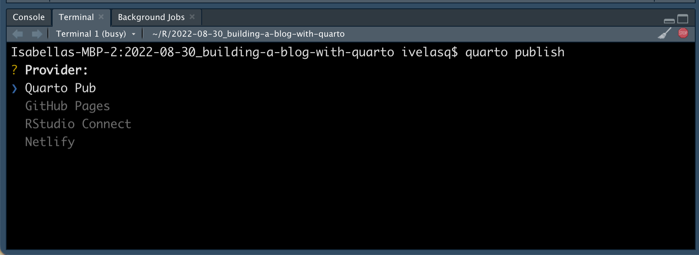

Publishing your blog
You can publish Quarto in a variety of places, including popular publishing services:
| Destination | Description |
|---|---|
| Quarto Pub | Publishing service for Quarto documents, websites, and books. Use Quarto Pub when you want a free, easy to use service for publicly available content. |
| GitHub Pages | Publish content based on source code managed within a GitHub repository. Use GitHub Pages when the source code for your document or site is hosted on GitHub. |
| RStudio Connect | Publishing platform for secure sharing of data products within an organization. Use RStudio Connect when you want to publish content within an organization rather than on the public internet. |
| Netlify | Professional web publishing platform. Use Netlify when you want support for custom domains, authentication, previewing branches, and other more advanced capabilities. |
| Other Services | Content rendered with Quarto uses standard formats (HTML, PDFs, MS Word, etc.) that can be published anywhere. Use this if one of the methods above don’t meet your requirements. |
Quarto Pub
Quarto Pub (https://quartopub.com/) is a free publishing service for content created with Quarto. Quarto Pub is ideal for blogs, course or project websites, books, presentations, and personal hobby sites.
- Publicly visible
- Can be no larger than 100 MB
- Have a softlimit of 10 GB of bandwidth per month
{kind=link}
- Create a QuartoPub account at https://quartopub.com/.
After creating an account, run quarto publish in the directory of your blog. If you haven’t published to Quarto Pub before, the publish command will prompt you to authenticate:

Next, it will ask what provider you’d like:
 Then what account you’d like the site under:
{kind=link}
{kind=link}
Finally, the name of your site:

Now your blog is online! Here, you can edit the slug and delete the site.
{kind=link}
_publish.yml
The _publish.yml file is automatically created (or updated) whenever you execute the quarto publish command and is located within the project or document directory.
- source: project
quarto-pub:
- id: # site ID here
url: # site URL here- Publish your blog to your account using
quarto publish.